Project Normandia
Project Normandia is an immersive VR simulation built for Meta Quest 3, developed during my internship at Radica Design, recreating the Allied landings in Normandy on June 6, 1944. The goal is historical divulgation through experiential learning: the player explores a filologically accurate coastal battlefield, interacts with historical equipment, and can switch between a slower-paced Tour mode for exploration and education, and an Action FPS mode with physically accurate weapon handling and combat. The application runs cross-platform (VR standalone and PC with mouse/keyboard) from the same scene, and targets a stable 90 FPS on mobile VR hardware. The project is still under active development.
Role in the project
After an initial period pairing with another intern, I took over most of the project's technical development, splitting my time between gameplay programming, 3D asset work, and getting the whole thing to run smoothly on standalone VR hardware. Day to day, that meant:
- Multi-platform architecture (VR + PC, shared scene)
- Diegetic historical interaction panels (edutech)
- VR locomotion and tactical ammo inventory
- Weapon systems with physically-based reload
- 3D asset modeling and optimization (Blender)
- Performance profiling for Meta Quest 3
- Audio system
- Core gameplay systems (health, scoring, timer)
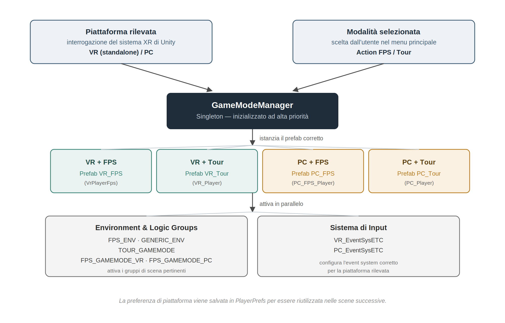
Multi-platform architecture
I designed the GameModeManager, a singleton that detects the running platform (VR/PC) and selects between four player variants (VR FPS, VR Tour, PC FPS, PC Tour), letting the same scene run unmodified across platforms and modes, with no manual setup needed during testing or deploys.
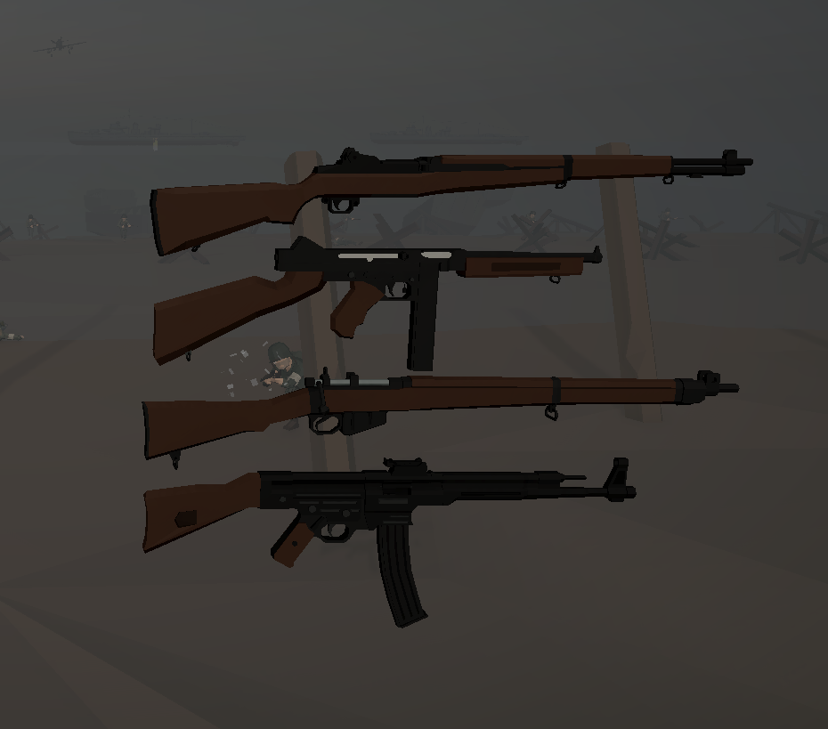
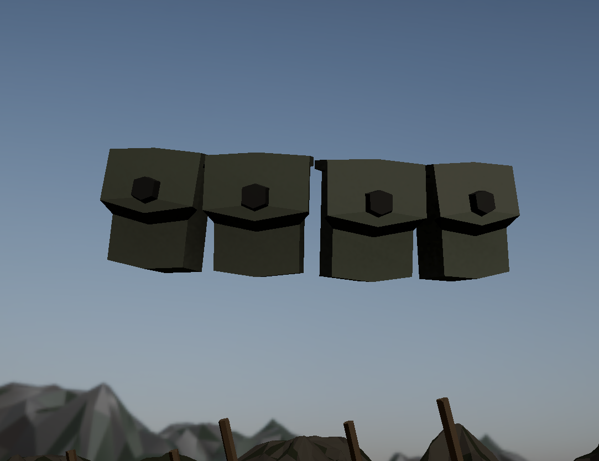
Weapon systems & VR interaction
A component-based architecture (WeaponCore, VRWeaponController, PCWeaponController) drives physically accurate reload mechanics for the M1 Garand (en bloc clip, auto-eject) and Thompson M1A1 (manual bolt), shared across VR and PC without duplicating logic. In VR, ammo is managed through a wearable tactical belt (SimpleVRBelt, AmmoReturnSocket) that gives magnetic reload feedback for grabbing and stowing magazines mid-action, keeping the player's hands on the weapon instead of a menu.
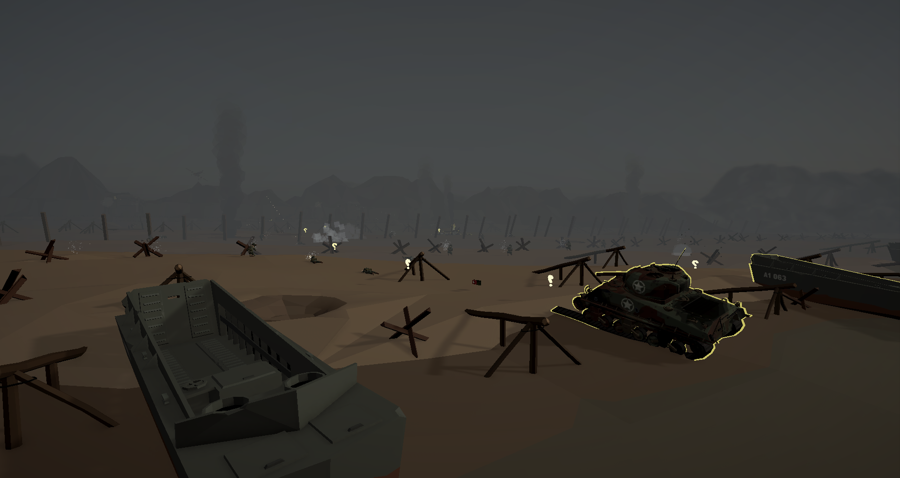
Historical interaction & edutech
Beyond combat, the project is built around experiential learning: looking at or interacting with objects in the scene (vehicles, equipment, fortifications) triggers a diegetic information panel with historical context drawn from verified sources, with no menus breaking immersion. It's aimed at history enthusiasts, students, and museums or cultural institutions looking for an experiential complement to traditional teaching material.
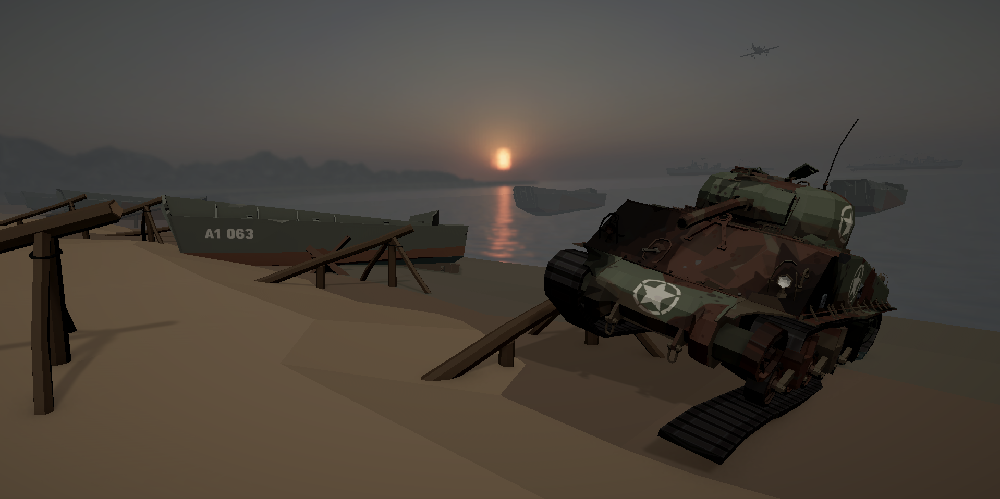
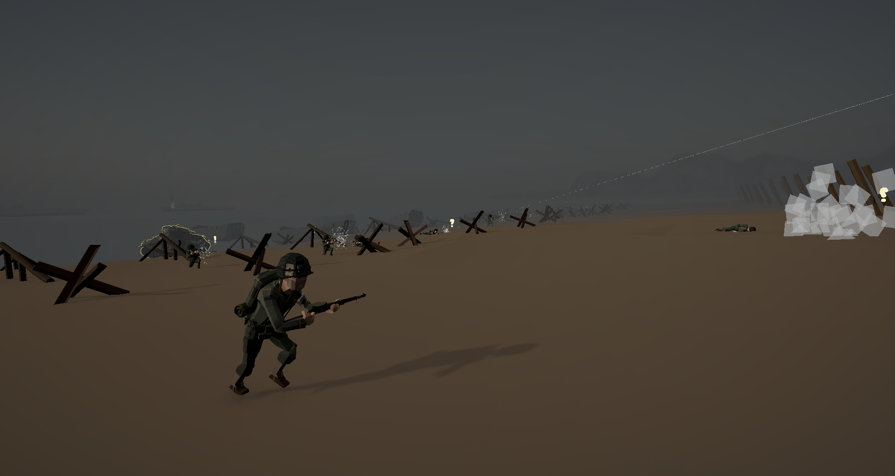
Gameplay & performance
- Dual VR locomotion (vignette-assisted continuous movement + parabolic teleport) to reduce motion sickness
- Core gameplay loop: player health, scoring, match timer, end-of-match flow, diegetic wrist-mounted VR UI
- Pooled AudioManager handling dozens of simultaneous spatial sound sources with minimal CPU overhead
- Custom physics for dynamically altering gravity vectors and force constants
- Retopology/LOD pipeline, baked lighting, draw call reduction and an event-driven refactor to hit a stable 90 FPS on Meta Quest 3
Gallery
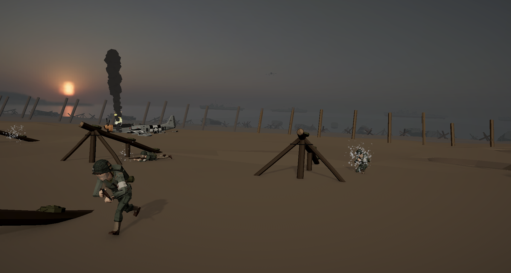
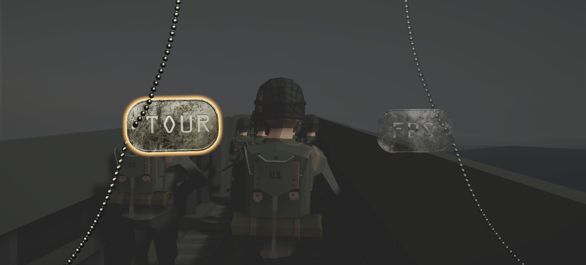
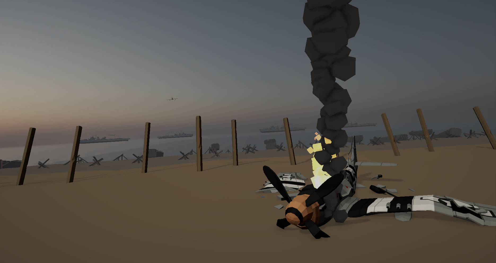
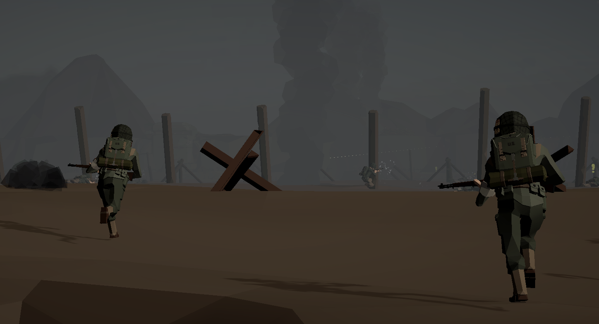
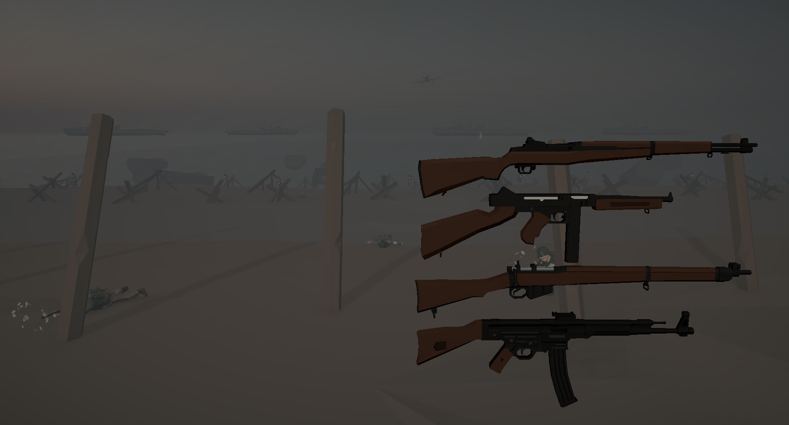
More details are available on request, including the full project thesis.